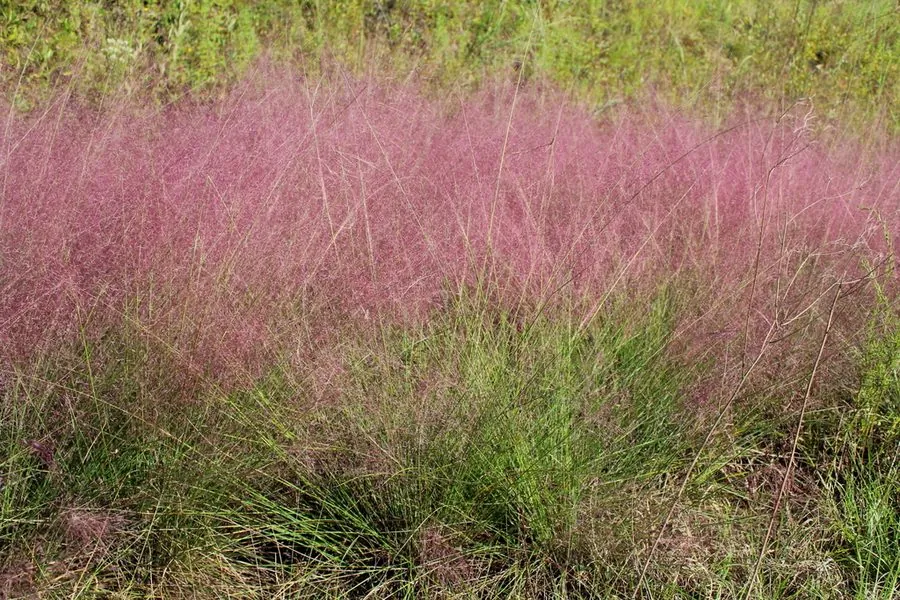

花卉与草本 · 植物界
粉黛乱子草 Muhlenbergia capillaris

禾本科多年生草本，秋季抽出粉紫色云雾状花序，成片种植如粉色云海，是近年热门的景观草，原产北美。
- 分类
- 门被子植物门纲木兰纲目禾本目科禾本科属乱子草属
- 栖息环境
- 北美草原的开阔地，喜光、耐旱、耐瘠薄
- 地理分布
- 原产北美洲，中国各地景观绿化大量引种栽培
- 保护级别
- 暂无评估
物种志
粉黛乱子草为禾本科乱子草属多年生草本，株高 60–100 厘米，丛生。叶片细长，绿色，秋季转为古铜色。圆锥花序大型、松散，由无数细小花序组成，呈粉紫色至玫瑰色，远看如云雾，花期 9–11 月；果实为颖果。
粉黛乱子草原产北美洲的草原，喜阳光充足、温暖和排水良好的环境，耐旱耐瘠薄，适应性强。它秋季抽出粉紫色云雾状花序，成片种植时如粉色云海，是近年非常热门的景观草，常用于公园、花海和道路绿化；花序也可剪下作干花。栽培以分株和播种为主，需保证充足光照，否则花序颜色变淡、株型松散。
形态与习性
- 株高60–100 厘米，丛生
- 花期9–11 月，花序粉紫色
- 果期秋季结颖果
- 光照极喜光
- 水分耐旱，忌积水
- 土壤疏松、排水良好的壤土，耐瘠薄
- 繁殖分株、播种
- 主要用途花海景观、干花、道路绿化
趣味知识
- 粉黛乱子草的花序由无数细小花朵组成，远看如粉色云雾。
- 它原产北美草原，成片种植时如粉色云海，是热门景观草。
- 光照不足时花序颜色变淡、株型松散。
- 秋季花序剪下后可制作干花，观赏期较长。